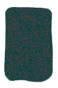

Rune name: Odin
Rune meaning: The Unknowable, what you seek has been answered, the answer lies within and cannot be found externaly, however, do not dwell within to seek your answers but move forward, following your heart, and remember you are your own wise voice when you hear what is said beyond mind alone. The Blank Rune offers a reminder that our own knowledge is greater and stonger than we 'think'.
